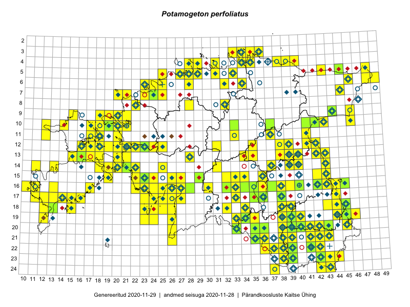

Potamogeton perfoliatus — kaelus-penikeel
Kaardile koondatud taksonid: Potamogeton perfoliatus L. (188)

← Potamogeton pectinatus | tagasi liigiloendi juurde | Potamogeton perfoliatus × Potamogeton praelongus →
Kaart põhineb 188 kirjel, neist:
vaatlusi 150
eksemplare 38
Kaasaegsed1 leiukohad asuvad 137 ruudus.
Andmed “Eesti taimede levikuatlasest”,2 sulgudes ruutude arv:3
● 1971–2005 (216)
○ 1921–1970 (25)
△ kuni 1920 (0)
+ hävinud (0)
? kaheldav (0)
Lisaruudud teistest andmebaasidest:4
ELF: 2006– . . . (0)
PKÜ: 2006– . . . (0)
ELF: 1971–2005 (0)
PKÜ: 1997–2005 (7)
| Ruut | Vaatleja(d) | Vaatlusaeg | Kirje PlutoFis |
|---|---|---|---|
| 16-44 | Toomas Kukk, Eerik Leibak | 2015-07-29 | ruut/ala: Potamogeton perfoliatus L. |
| 20-45 | Katrit Karus, Tõnu Feldmann | 2015-07-27 | ruut/ala: Potamogeton perfoliatus L. |
| 20-41 | Tõnu Feldmann, Katrit Karus | 2015-07-28 | ruut/ala: Potamogeton perfoliatus L. |
| 16-33 | Tõnu Feldmann, Katrit Karus | 2015-07-31 | ruut/ala: Potamogeton perfoliatus L. |
| 16-32 | Tõnu Feldmann, Katrit Karus | 2015-07-31 | ruut/ala: Potamogeton perfoliatus L. |
| 16-32 | Tõnu Feldmann, Katrit Karus | 2015-07-31 | ruut/ala: Potamogeton perfoliatus L. |
| 15-32 | Katrit Karus, Tõnu Feldmann | 2015-07-31 | ruut/ala: Potamogeton perfoliatus L. |
| 13-42 | Katrit Karus, Tõnu Feldmann | 2015-07-29 | ruut/ala: Potamogeton perfoliatus L. |
| 13-35 | Katrit Karus, Tõnu Feldmann | 2015-08-05 | ruut/ala: Potamogeton perfoliatus L. |
| 13-34 | Katrit Karus, Tõnu Feldmann | 2015-08-03 | ruut/ala: Potamogeton perfoliatus L. |
| 13-34 | Katrit Karus, Tõnu Feldmann | 2015-08-03 | ruut/ala: Potamogeton perfoliatus L. |
| 06-32 | Katrit Karus, Tõnu Feldmann | 2015-08-04 | ruut/ala: Potamogeton perfoliatus L. |
| 05-31 | Katrit Karus, Tõnu Feldmann | 2015-08-04 | ruut/ala: Potamogeton perfoliatus L. |
| 05-31 | Katrit Karus, Tõnu Feldmann | 2015-08-04 | ruut/ala: Potamogeton perfoliatus L. |
| 15-23 | Indrek Tammekänd, Irja Tammekänd | 2015-08-02 | ruut/ala: Potamogeton perfoliatus L. |
| 15-23 | Indrek Tammekänd | 2015-04-06 | ruut/ala: Potamogeton perfoliatus L. |
| 15-24 | Indrek Tammekänd, Liisa Rennel, Agu Leivits, Hannes Pehlak, Irja Tammekänd | 2015-04-27 | ruut/ala: Potamogeton perfoliatus L. |
| 15-22 | Vilma Kuusk, Indrek Tammekänd | 2015-06-30 | ruut/ala: Potamogeton perfoliatus L. |
| 16-38 | Thea Kull, Eerik Leibak | 2015-07-03 | ruut/ala: Potamogeton perfoliatus L. |
| 23-38 | Eeva-Maria Jeletsky, Tarmo Niitla | 2015-07-15 | ruut/ala: Potamogeton perfoliatus L. |
| 24-37 | Eeva-Maria Jeletsky, Tarmo Niitla | 2015-07-16 | ruut/ala: Potamogeton perfoliatus L. |
| 21-38 | Eeva-Maria Jeletsky, Tarmo Niitla | 2015-08-12 | ruut/ala: Potamogeton perfoliatus L. |
| 14-40 | Erkki Otsman, Sergei Smirnov | 2015-07-22 | ruut/ala: Potamogeton perfoliatus L. |
| 12-38 | Ulvi Selgis | 2015-08-21 | ruut/ala: Potamogeton perfoliatus L. |
| 16-40 | Kadi Palmik, Helle Mäemets | 2015-07-22 | ruut/ala: Potamogeton perfoliatus L. |
| 19-46 | Thea Kull, Meeli Mesipuu | 2015-08-19 | ruut/ala: Potamogeton perfoliatus L. |
| 15-36 | Helle Mäemets, Mare Leis | 2015-07-06 | ruut/ala: Potamogeton perfoliatus L. |
| 22-38 | Kadi Palmik, Helle Mäemets | 2015-08-19 | ruut/ala: Potamogeton perfoliatus L. |
| 10-20 | Tõnu Ploompuu, Anna-Grete Rebane, Hanna-Eliisa Luts | 2015-07-20 | ruut/ala: Potamogeton perfoliatus L. |
| 11-20 | Hanna-Eliisa Luts, Tõnu Ploompuu | 2015-08-13 | ruut/ala: Potamogeton perfoliatus L. |
| 09-21 | Kadi-Liis Kesler, Tõnu Ploompuu | 2015-07-14 | ruut/ala: Potamogeton perfoliatus L. |
| 10-21 | Tõnu Ploompuu | 2015-08-21 | ruut/ala: Potamogeton perfoliatus L. |
| 19-45 | Toomas Kukk, Tiit Hallikma | 2016-06-17 | ruut/ala: Potamogeton perfoliatus L. |
| 18-43 | Maret Gerz, Liina Oja | 2016-06-17 | ruut/ala: Potamogeton perfoliatus L. |
| 16-25 | Thea Kull, Helle Mäemets | 2016-07-04 | ruut/ala: Potamogeton perfoliatus L. |
| 15-19 | Mari Reitalu, Triin Reitalu | 2016-06-30 | ruut/ala: Potamogeton perfoliatus L. |
| 13-38 | Eeva-Maria Jeletsky, Tarmo Niitla | 2016-07-23 | ruut/ala: Potamogeton perfoliatus L. |
| 14-37 | Eeva-Maria Jeletsky, Tarmo Niitla | 2016-07-23 | ruut/ala: Potamogeton perfoliatus L. |
| 17-33 | Toomas Kukk, Eerik Leibak | 2016-07-20 | ruut/ala: Potamogeton perfoliatus L. |
| 21-35 | Toomas Kukk, Susanna Vain, Raivo Kalle | 2016-07-18 | ruut/ala: Potamogeton perfoliatus L. |
| 18-32 | Toomas Kukk, Hannes Pehlak | 2016-07-19 | ruut/ala: Potamogeton perfoliatus L. |
| 15-32 | Toomas Kukk, Liina Oja | 2016-07-21 | ruut/ala: Potamogeton perfoliatus L. |
| 18-34 | Thea Kull, Indrek Tammekänd | 2016-07-19 | ruut/ala: Potamogeton perfoliatus L. |
| 17-14 | Toomas Kukk, Meeli Mesipuu, Johannes Kõdar | 2016-08-11 | ruut/ala: Potamogeton perfoliatus L. |
| 11-18 | Sander Laherand, Peedu Saar, Nele Jõessar | 2016-08-08 | ruut/ala: Potamogeton perfoliatus L. |
| 13-15 | Maret Gerz, Peedu Saar | 2016-08-11 | ruut/ala: Potamogeton perfoliatus L. |
| 23-44 | Peedu Saar, Karin Kikas | 2016-08-19 | ruut/ala: Potamogeton perfoliatus L. |
| 17-16 | Toomas Kukk, Meeli Mesipuu | 2016-08-12 | ruut/ala: Potamogeton perfoliatus L. |
| 04-31 | Sander Laherand, Toomas Kukk | 2016-08-31 | ruut/ala: Potamogeton perfoliatus L. |
| 20-26 | Sirje Azarov, Indrek Tammekänd | 2016-07-18 | ruut/ala: Potamogeton perfoliatus L. |
| 21-26 | Sirje Azarov, Indrek Tammekänd | 2016-07-18 | ruut/ala: Potamogeton perfoliatus L. |
| 16-27 | Tiit Hallikma, Tõnu Ploompuu | 2016-06-20 | ruut/ala: Potamogeton perfoliatus L. |
| 18-24 | Peedu Saar, Ott Luuk | 2016-09-21 | ruut/ala: Potamogeton perfoliatus L. |
| 17-25 | Tiit Hallikma, Tõnu Ploompuu | 2016-07-06 | ruut/ala: Potamogeton perfoliatus L. |
| 16-17 | Peedu Saar, Ott Luuk | 2016-09-01 | ruut/ala: Potamogeton perfoliatus L. |
| 17-44 | Peedu Saar | 2016-08-24 | ruut/ala: Potamogeton perfoliatus L. |
| 19-23 | Ott Luuk, Peedu Saar | 2016-09-21 | ruut/ala: Potamogeton perfoliatus L. |
| 18-23 | Ott Luuk, Peedu Saar | 2016-09-21 | ruut/ala: Potamogeton perfoliatus L. |
| 14-11 | Peedu Saar, Ott Luuk | 2016-10-07 | ruut/ala: Potamogeton perfoliatus L. |
| 15-26 | Kadi-Liis Kesler, Tiina Elvisto | 2015-07-28 | ruut/ala: Potamogeton perfoliatus L. |
| 06-46 | Kadi-Liis Kesler, Tiina Elvisto | 2015-07-30 | ruut/ala: Potamogeton perfoliatus L. |
| 04-29 | Kadi-Liis Kesler, Tiina Elvisto | 2015-08-12 | ruut/ala: Potamogeton perfoliatus L. |
| 09-20 | Kadi-Liis Kesler | 2015-06-25 | ruut/ala: Potamogeton perfoliatus L. |
| 16-32 | Elle Rajandu, Indrek Tammekänd | 2016-07-20 | ruut/ala: Potamogeton perfoliatus L. |
| 22-37 | Jaak-Albert Metsoja, Mari Metsoja | 2016-06-16 | ruut/ala: Potamogeton perfoliatus L. |
| 04-34 | Hannes Pehlak, Toomas Kukk | 2016-07-26 | ruut/ala: Potamogeton perfoliatus L. |
| 16-35 | Jaak-Albert Metsoja, Lena Neuenkamp, Sirje Azarov | 2016-07-20 | ruut/ala: Potamogeton perfoliatus L. |
| 16-27 | Indrek Tammekänd | 2015-05-13 | ruut/ala: Potamogeton perfoliatus L. |
| 12-18 | Peedu Saar, Ilmar Uibopuu | 2017-06-15 | ruut/ala: Potamogeton perfoliatus L. |
| 17-23 | Indrek Tammekänd, Eike Vunk | 2017-07-20 | ruut/ala: Potamogeton perfoliatus L. |
| 17-27 | Indrek Tammekänd | 2016-07-12 | ruut/ala: Potamogeton perfoliatus L. |
| 22-36 | Ott Luuk, Peedu Saar | 2017-07-28 | ruut/ala: Potamogeton perfoliatus L. |
| 22-39 | Ott Luuk, Peedu Saar | 2017-07-27 | ruut/ala: Potamogeton perfoliatus L. |
| 16-37 | Ott Luuk, Thea Kull | 2017-08-01 | ruut/ala: Potamogeton perfoliatus L. |
| 06-48 | Toomas Kukk | 2017-07-21 | ruut/ala: Potamogeton perfoliatus L. |
| 06-49 | Toomas Kukk | 2017-07-21 | ruut/ala: Potamogeton perfoliatus L. |
| 15-29 | Ilmar Uibopuu, Toomas Kukk | 2017-08-11 | ruut/ala: Potamogeton perfoliatus L. |
| 12-41 | Ott Luuk, Peedu Saar | 2017-08-23 | ruut/ala: Potamogeton perfoliatus L. |
| 17-24 | Indrek Tammekänd, Ly Tammekänd | 2015-09-29 | ruut/ala: Potamogeton perfoliatus L. |
| 17-26 | Indrek Tammekänd | 2016-07-25 | ruut/ala: Potamogeton perfoliatus L. |
| 12-18 | Toomas Kukk, Peeter Pärn | 2017-09-09 | ruut/ala: Potamogeton perfoliatus L. |
| 11-12 | Toomas Kukk, Indrek Tammekänd | 2017-09-12 | ruut/ala: Potamogeton perfoliatus L. |
| 12-17 | Toomas Kukk, Indrek Tammekänd | 2017-09-11 | ruut/ala: Potamogeton perfoliatus L. |
| 12-16 | Peedu Saar, Ott Luuk | 2017-09-15 | ruut/ala: Potamogeton perfoliatus L. |
| 11-18 | Peedu Saar, Ott Luuk | 2017-09-12 | ruut/ala: Potamogeton perfoliatus L. |
| 06-46 | Katrit Karus, Tõnu Feldmann | 2017-08-09 | ruut/ala: Potamogeton perfoliatus L. |
| 11-33 | Tõnu Feldmann, Katrit Karus | 2017-07-03 | ruut/ala: Potamogeton perfoliatus L. |
| 10-18 | Ott Luuk, Peedu Saar | 2017-09-12 | ruut/ala: Potamogeton perfoliatus L. |
| 04-38 | Peedu Saar, Toomas Kukk | 2017-09-28 | ruut/ala: Potamogeton perfoliatus L. |
| 11-20 | Ott Luuk, Ilmar Uibopuu | 2017-08-10 | ruut/ala: Potamogeton perfoliatus L. |
| 14-43 | Peedu Saar, Ott Luuk | 2017-08-21 | ruut/ala: Potamogeton perfoliatus L. |
| 19-44 | Helle Mäemets, Kadi Palmik | 2017-08-02 | ruut/ala: Potamogeton perfoliatus L. |
| 12-35 | Helle Mäemets, Kadi Palmik | 2017-07-14 | ruut/ala: Potamogeton perfoliatus L. |
| 16-26 | Indrek Tammekänd | 2017-09-19 | ruut/ala: Potamogeton perfoliatus L. |
| 12-24 | Peedu Saar, Timo Luhamäe | 2017-08-09 | ruut/ala: Potamogeton perfoliatus L. |
| 12-25 | Peedu Saar, Timo Luhamäe | 2017-08-09 | ruut/ala: Potamogeton perfoliatus L. |
| 21-36 | Peedu Saar, Ott Luuk | 2017-07-28 | ruut/ala: Potamogeton perfoliatus L. |
| 12-42 | Peedu Saar | 2017-07-24 | ruut/ala: Potamogeton perfoliatus L. |
| 13-43 | Peedu Saar | 2017-07-24 | ruut/ala: Potamogeton perfoliatus L. |
| 16-26 | Helle Mäemets, Kadi Palmik | 2017-06-28 | ruut/ala: Potamogeton perfoliatus L. |
| 18-32 | Helle Mäemets, Kadi Palmik | 2017-07-03 | ruut/ala: Potamogeton perfoliatus L. |
| 19-26 | Indrek Tammekänd | 2016-06-29 | ruut/ala: Potamogeton perfoliatus L. |
| 16-45 | Toomas Kukk, Eerik Leibak | 2015-07-29 | punkt: Potamogeton perfoliatus L. |
| 16-39 | Kadi Palmik, Helle Mäemets | 2015-07-22 | ruut/ala: Potamogeton perfoliatus L. |
| 17-36 | Helle Mäemets, Mare Leis, Malle Timm | 2015-06-25 | ruut/ala: Potamogeton perfoliatus L. |
| 10-46 | Rein Kalamees, Kersti Püssa | 2016-06-28 | punkt: Potamogeton perfoliatus L. |
| 12-16 | Peedu Saar, Ott Luuk | 2017-09-15 | punkt: Potamogeton perfoliatus L. |
| 05-43 | Katrit Karus, Tõnu Feldmann | 2017-08-09 | ruut/ala: Potamogeton perfoliatus L. |
| 06-46 | Katrit Karus, Tõnu Feldmann | 2017-08-09 | ruut/ala: Potamogeton perfoliatus L. |
| 10-33 | Katrit Karus, Tõnu Feldmann | 2017-07-03 | ruut/ala: Potamogeton perfoliatus L. |
| 04-38 | Peedu Saar, Toomas Kukk | 2017-09-28 | punkt: Potamogeton perfoliatus L. |
| 08-28 | Helle Mäemets, Kadi Palmik | 2017-08-03 | ruut/ala: Potamogeton perfoliatus L. |
| 17-27 | Elle Meier, Oliver Parrest | 2016-08-19 | punkt: Potamogeton perfoliatus L. |
| 17-27 | Elle Meier, Oliver Parrest | 2016-07-19 | punkt: Potamogeton perfoliatus L. |
| 14-39 | Elle Rajandu, Karin Kikas | 2016-07-01 | punkt: Potamogeton perfoliatus L. |
| 15-27 | Indrek Tammekänd | 2015-04-04 | ruut/ala: Potamogeton perfoliatus L. |
| 16-36 | Helle Mäemets, Mare Leis, Jaak-Albert Metsoja | 2015-07-05 | ruut/ala: Potamogeton perfoliatus L. |
| 18-23 | Mari Reitalu, Sirje Azarov, Ester Valdvee, Triin Reitalu | 2017-07-11 | ruut/ala: Potamogeton perfoliatus L. |
| 20-39 | Ilmar Uibopuu, Marko Vainu, Kadri Kuusksalu | 2018-07-14 | ruut/ala: Potamogeton perfoliatus L. |
| 12-39 | Ulvi Selgis | 2018-07-17 | ruut/ala: Potamogeton perfoliatus L. |
| 13-39 | Ulvi Selgis | 2018-07-29 | ruut/ala: Potamogeton perfoliatus L. |
| 05-48 | Peedu Saar, Toomas Kukk | 2018-09-04 | ruut/ala: Potamogeton perfoliatus L. |
| 05-48 | Peedu Saar, Toomas Kukk | 2018-09-04 | punkt: Potamogeton perfoliatus L. |
| 06-49 | Peedu Saar, Toomas Kukk | 2018-09-04 | ruut/ala: Potamogeton perfoliatus L. |
| 06-23 | Peedu Saar | 2018-07-04 | ruut/ala: Potamogeton perfoliatus L. |
| 10-41 | Ott Luuk, Eerik Leibak | 2016-08-04 | punkt: Potamogeton perfoliatus L. |
| 15-22 | Toomas Kukk, Peedu Saar, Heikki Luhamaa | 2018-09-18 | ruut/ala: Potamogeton perfoliatus L. |
| 19-45 | Toomas Kukk, Eerik Leibak, Timo Luhamäe | 2018-08-27 | ruut/ala: Potamogeton perfoliatus L. |
| 23-42 | Toomas Kukk, Indrek Tammekänd | 2019-07-12 | ruut/ala: Potamogeton perfoliatus L. |
| 21-41 | Toomas Kukk, Indrek Tammekänd | 2019-07-10 | ruut/ala: Potamogeton perfoliatus L. |
| 21-42 | Toomas Kukk, Indrek Tammekänd | 2019-07-10 | ruut/ala: Potamogeton perfoliatus L. |
| 04-34 | Toomas Kukk, Rein Kalamees | 2019-08-06 | punkt: Potamogeton perfoliatus L. |
| 19-39 | Thea Kull | 2019-07-10 | ruut/ala: Potamogeton perfoliatus L. |
| 14-31 | Ott Luuk, Eerik Leibak | 2019-08-28 | ruut/ala: Potamogeton perfoliatus L. |
| 20-45 | Peedu Saar, Ott Luuk | 2019-09-24 | ruut/ala: Potamogeton perfoliatus L. |
| 11-17 | Toomas Kukk, Rein Kalamees | 2019-10-05 | ruut/ala: Potamogeton perfoliatus L. |
| 09-46 | Peedu Saar, Timo Luhamäe | 2019-09-11 | ruut/ala: Potamogeton perfoliatus L. |
| 16-35 | Meeli Mesipuu, Timo Luhamäe | 2019-08-27 | ruut/ala: Potamogeton perfoliatus L. |
| 16-30 | Peedu Saar, Martin Tikk, Toomas Kukk | 2019-08-28 | ruut/ala: Potamogeton perfoliatus L. |
| 17-33 | Peedu Saar, Martin Tikk, Toomas Kukk | 2019-08-27 | punkt: Potamogeton perfoliatus L. |
| 19-39 | Thea Kull | 2019-07-10 | punkt: Potamogeton perfoliatus L. |
| 09-18 | Ott Luuk | 2019-09-17 | ruut/ala: Potamogeton perfoliatus L. |
| 05-33 | Peedu Saar, Timo Luhamäe | 2019-08-05 | ruut/ala: Potamogeton perfoliatus L. |
| 20-45 | Ott Luuk | 2019-09-01 | ruut/ala: Potamogeton perfoliatus L. |
| 20-45 | Ott Luuk, Tiit Hallikma | 2019-07-10 | ruut/ala: Potamogeton perfoliatus L. |
| 19-23 | Indrek Tammekänd | 2018-06-01 | ruut/ala: Potamogeton perfoliatus L. |
| 18-23 | Indrek Tammekänd | 2018-05-31 | ruut/ala: Potamogeton perfoliatus L. |
| 11-37 | Helle Mäemets, Kadi Palmik | 2018-07-11 | ruut/ala: Potamogeton perfoliatus L. |
| 15-23 | Helle Mäemets, Kadi Palmik | 2018-08-30 | punkt: Potamogeton perfoliatus L. |
| 18-38 | Helle Mäemets, Kadi Palmik | 2018-07-05 | punkt: Potamogeton perfoliatus L. |
| 18-45 | Peedu Saar | 2015-07-04 | TAA0116513: Potamogeton perfoliatus L. |
| 16-42 | Peedu Saar | 2015-08-21 | TAA0116515: Potamogeton perfoliatus L. |
| 23-42 | Peedu Saar, Ott Luuk | 2015-08-12 | TAA0116518: Potamogeton perfoliatus L. |
| 18-13 | Jana-Maria Habicht | 2011-07-08 | TAM0122486: Potamogeton perfoliatus L. |
| 20-33 | Jana-Maria Habicht | 2014-07-12 | TAM0122493: Potamogeton perfoliatus L. |
| 22-39 | Jana-Maria Habicht | 2014-07-30 | TAM0122494: Potamogeton perfoliatus L. |
| 05-45 | Toomas Kukk, Tiit Hallikma | 2015-07-21 | TAA0134282: Potamogeton perfoliatus L. |
| 16-45 | Toomas Kukk, Eerik Leibak | 2015-07-29 | TAA0135655: Potamogeton perfoliatus L. |
| 22-41 | Toomas Kukk, Tiit Hallikma | 2016-06-16 | TAA0136011: Potamogeton perfoliatus L. |
| 20-43 | Thea Kull, Peedu Saar | 2016-08-05 | TAA0139383: Potamogeton perfoliatus L. |
| 13-16 | Ott Luuk, Peedu Saar | 2016-08-31 | TAA0139239: Potamogeton perfoliatus L. |
| 15-29 | Toomas Kukk, Ilmar Uibopuu | 2017-08-11 | TAA0141614: Potamogeton perfoliatus L. |
| 16-35 | Thea Kull, Ott Luuk | 2017-06-22 | TAA0142241: Potamogeton perfoliatus L. |
| 16-37 | Thea Kull, Ott Luuk | 2017-08-01 | TAA0142282: Potamogeton perfoliatus L. |
| 23-39 | Ott Luuk, Peedu Saar | 2017-07-27 | TAA0142746: Potamogeton perfoliatus L. |
| 19-45 | Meeli Mesipuu, Thea Kull | 2015-08-19 | TAA0144001: Potamogeton perfoliatus L. |
| 10-19 | Meeli Mesipuu, Ott Luuk | 2016-09-15 | TAA0144102: Potamogeton perfoliatus L. |
| 17-35 | Meeli Mesipuu, Toivo Sepp, Susanna Vain | 2016-07-20 | TAA0144187: Potamogeton perfoliatus L. |
| 10-33 | Tõnu Feldmann, Katrit Karus | 2017-07-03 | TAA0144443: Potamogeton perfoliatus L. |
| 16-34 | Ott Luuk, Thea Kull | 2017-06-22 | TAA0142865: Potamogeton perfoliatus L. |
| 16-40 | Ott Luuk | 2017-07-09 | TAA0142868: Potamogeton perfoliatus L. |
| 20-39 | Helle Mäemets | 2007-07-16 | TAA2001843: Potamogeton perfoliatus L. |
| 19-39 | Helle Mäemets | 2007-07-24 | TAA2001879: Potamogeton perfoliatus L. |
| 10-41 | Ott Luuk, Eerik Leibak | 2016-08-04 | TAA0145578: Potamogeton perfoliatus L. |
| 20-36 | Ott Luuk, Thea Kull | 2016-08-23 | TAA0145611: Potamogeton perfoliatus L. |
| 07-24 | Thea Kull, Kaili Kattai | 2018-07-04 | TAA0142368: Potamogeton perfoliatus L. |
| 15-23 | Helle Mäemets | 2006-09-04 | TAA2002963: Potamogeton perfoliatus L. |
| 17-36 | Helle Mäemets | 2006-06-13 | TAA2002992: Potamogeton perfoliatus L. |
| 17-36 | Helle Mäemets | 2006-06-13 | TAA2002993: Potamogeton perfoliatus L. |
| 09-44 | Ott Luuk, Hannes Pehlak | 2015-07-24 | TAA0146119: Potamogeton perfoliatus L. |
| 19-34 | Aime Mäemets | 2007-07-04 | TAA2003775: Potamogeton perfoliatus L. |
| 20-40 | Helle Mäemets | 2011-09-02 | TAA2004070: Potamogeton perfoliatus L. |
| 17-38 | Ott Luuk, Peedu Saar | 2019-07-15 | TAA0147536: Potamogeton perfoliatus L. |
| 12-23 | Toomas Kukk, Peedu Saar | 2019-08-30 | TAA0148571: Potamogeton perfoliatus L. |
| 16-32 | Thea Kull, Mari Reitalu | 2019-08-29 | TAA0148075: Potamogeton perfoliatus L. |
| 22-41 | Peedu Saar, Toomas Kukk | 2019-08-01 | TAA0149515: Potamogeton perfoliatus L. |
| 10-37 | Peedu Saar, Ott Luuk | 2019-06-10 | TAA0149532: Potamogeton perfoliatus L. |
| 20-40 | Indrek Tammekänd, Toomas Kukk | 2019-07-09 | TAA0151763: Potamogeton perfoliatus L. |
Kaasaegsed leiukohad (tähistatud värvitud ruutudega) põhinevad peamiselt 2014–2019 välitööandmetel. Väiksemal määral on andmebaasi kantud vanemaid leiuandmeid aastatest 2006–2013.↩︎
Kukk, T., Kull, T., Eesti taimede levikuatlas. Eesti Maaülikool, Põllumajandus- ja Keskkonnainstituut, Tartu, 2005.↩︎
NB! 2005. aasta atlase andmestikus katavad uuemad leiud vanemaid. Näiteks kui liik on ruudus registreeritud 1971–2005, siis pole võimalik öelda, kas ta oli sellest ruudust teada ka enne 1970. aastat. Vana atlase andmetel hävinud ja kaheldavaid leiukohti pole hilisemate (taas)leidude põhjal korrigeeritud.↩︎
Eestimaa Looduse Fondi (ELF) ja Pärandkoosluste Kaitse Ühingu (PKÜ) andmebaasid sisaldavad inventeeritud koosluste kirjeldusi ja liigiloendeid. Neist andmekogudest on kaardile lisatud lisatud vaid need ruudud, millest uue atlase andmekogus taksoni kohta kirjeid veel pole. Kõrvale on jäetud teadaolevalt kaheldavad määrangud. Kaartidel katavad uuema perioodi andmed vanemaid, PKÜ omad ELFi omi. Kattumise tõttu võib kaardil näha olla vähem mingi kategooria ruute kui legendis olev arv näitab. ELFi ja PKÜ andmed ei kajastu hetkel vaatluste tabelis ega ruutude liigiloendites.↩︎